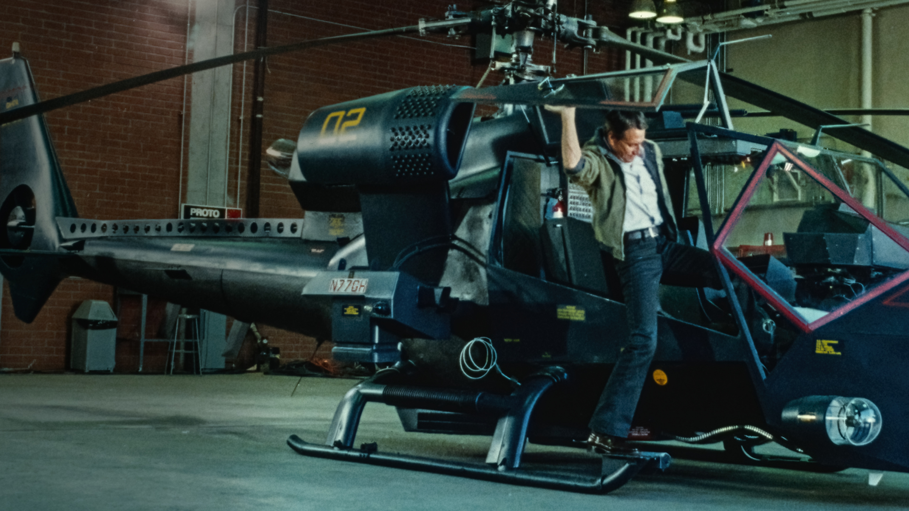
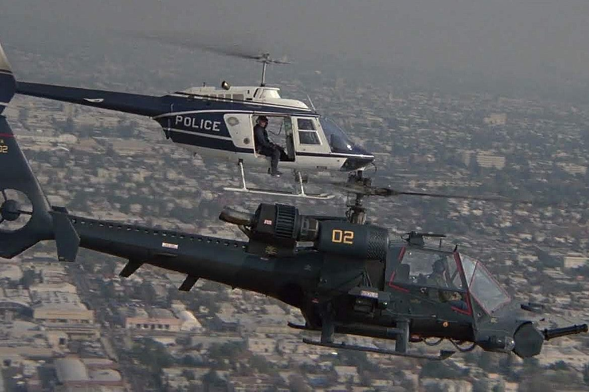
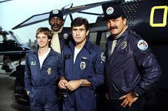

Alta vigilância nos céus
Baseado em um filme de sucesso, Trovão Azul trouxe um helicóptero tático cheio de armamentos e espionagem para a TV dos anos 80.

Equipado para qualquer missão

Inspirado no cinema

Combate ao crime com tecnologia
Apesar de curta, com apenas 1 temporada e 11 episódios em 1984, Trovão Azul marcou pela proposta ousada e por unir ação policial e ficção tecnológica.